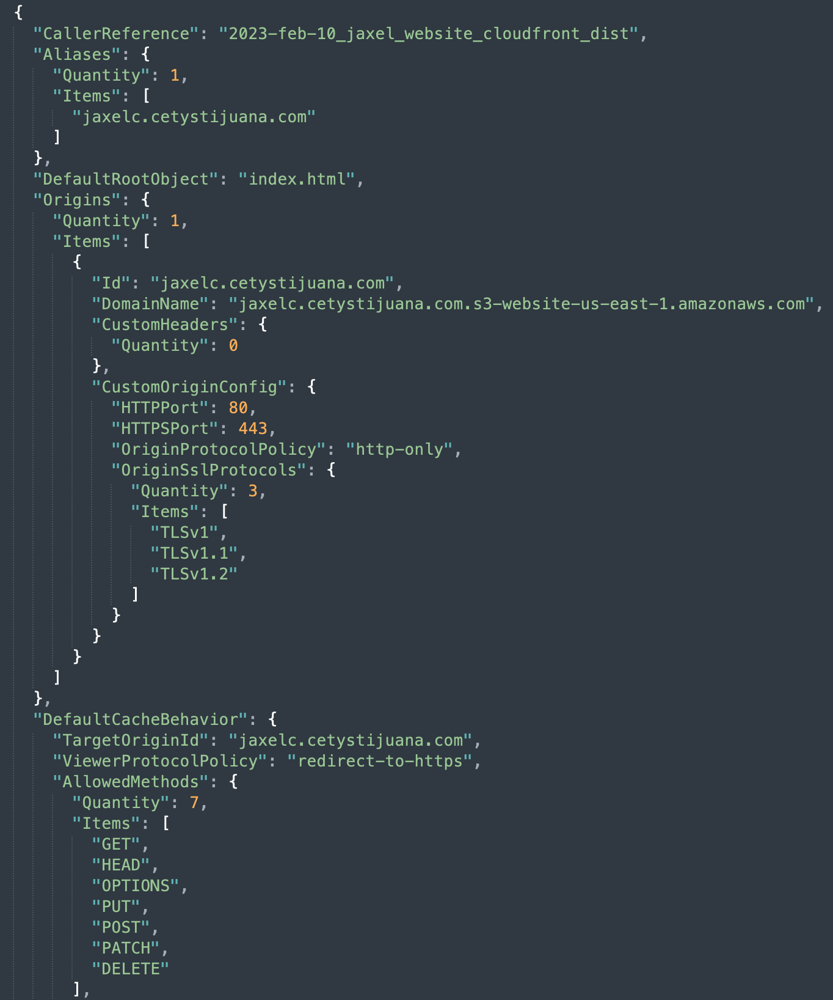
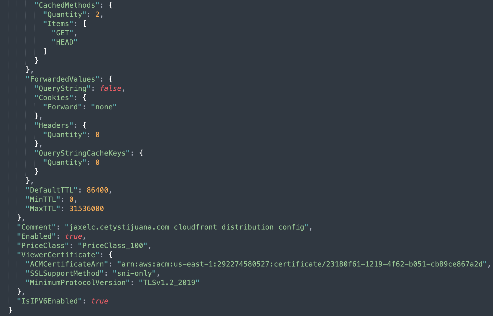
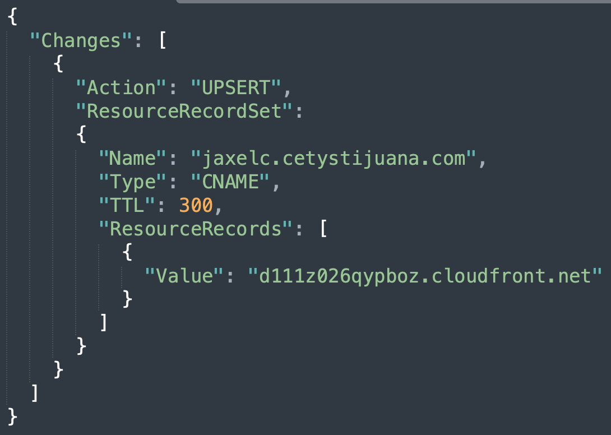
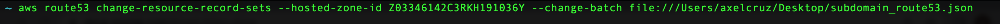
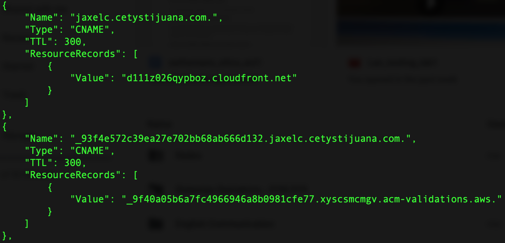
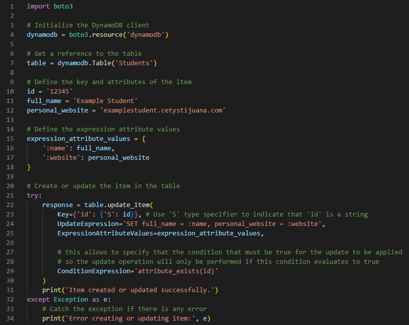

Axel Cruz
Computer Sciences - ICE191 Software Architechture
Computer Sciences - ICE191 Software Architechture
Work in progress!.
Work in progress!.
Team Members: Axel Cruz, David Espina, Marcos Moroyoqui and Hector Osuna
Project description: Expedia-like website, flights reservation site.
The scope of the project will be limited to selecting departure and arrival dates. Once determined, it will show a list of possible flights, in case of not having
any direct tickets, the system will suggest a trip with no more than 2 intermediate stops.
Once the trip is selected, a time window is given for the customer to select and pay the seats.
Visit the project website: Team 4 project website
a) To create a bucket, first you must be registered with Amazon S3 and have a valid Amazon Web Services Access Key ID to authenticate requests.
Anonymous requests are never allowed to create buckets. Also by creating the bucket, you become the bucket owner.
Keep in mind that NOT EVERY STRING IS AN ACCEPTABLE BUCKET NAME. For more information on bucket naming restrictions visit Bucket naming rules.
Here, we are going to create a bucket using the AWS CLI, also the id and credentials we are using are already configured.
For more information on aws credentials see quick setup guide.
b) Having all setup files configured, we proceed to open the terminal and use the following command to create the bucket:

Where --bucket refers to the attribute and my-bucket name has to be replaced with your bucket's name. Then --region is the attribute for the region of your bucket, here we are using
region us-east-1, which is the region where our credentials are configured.
Also, here we using command aws s3api instead of just aws s3, the main reason is because we need to call the AWS API so we can do another operations on S3 that come from other webservices, such as
uploading and downloading objects, manage our bucket and controlling the acceses to the S3 resources, and aws s3 only provieds simple operations such as storing backups, user-generated content and static assets.
c) After creating the bucket we get the following output:

Which shows you where is the bucket located, or the endpoint of your bucket.
d) Now you need to setup the bucket access policie, this is because when you get your bucket's website, it is publicly accessible and people can see and access your bucket's webite from anywhere using an endpoint.
For this, there 2 ways to setup the bucket policy file. The first one is creating calling the aws command and passing as JSON like text as an argument, directly on the cli. The second way is creating a JSON file
with the policy settings and then calling the file using the aws command. We are going to use the second way.
First we create a JSON file with the following information:

This information is necessary to setup the policies for your bucket, it is necessary because if you don't have policy permissions, Amazon S3 returns a 403 Access Denied error.
If you have the correct permissions, but you are not using an identity that belongs to the bucket owner's account, Amason S3 returns a 405 Method Not Allowed error. So this settings are needed in order to do operations
inside your bucket.
In the JSON file, we allow to publicly read objects in the bucket, this is needed for the bucket's website to be publicly accessed; the effect is set to allow, to allow this, and in Principal we define "*" for everythin
in the bucket; then we select what operation is to be allowed in the S3 bucket, this is set in the Action property; and finally we set the Resource, which is our S3 bucket, in this case my bucket's name is jaxelc.cetystijuana.com.
Note that there is a "/*" at the end, this specifies that we are setting the policy for every object, or content, inside the bucket.
e) Now we need to put the policy into the bucket, calling the JSON file just created. Use the following command:

To check our policy, we use the following command:
 my-bucket should be replaced with bucket's name, in this case my bucket is named jaxelc.cetystijuana.com
my-bucket should be replaced with bucket's name, in this case my bucket is named jaxelc.cetystijuana.com
You should get the following output with the policy settings:

f) Now that the bucket has public access permissions, it is necessary to set the website configuration, this is the main html and 404 files. Use the following command:

Here, my-bucket refers to your bucket's name.
g) Next, create a directory that will be used to store all website's files (htmls,css,js,etc.).
h) In the CLI navigate through the folde you created for the website's files, and sync those files to your website's name, and the use the bucket's endpoint, obtained in step c, and see your bucket's website.
Use the following command to sync your files to your bucket:

The dot means the folder you navigated to in the CLI, and the sync command updates any files to the destination, in this case, sync follows this syntax (origin, destination).
This means that we are uploading files from our folder, which contains the htmls, css, etc., to the bucket.
To link a subdomain of a parent domain, we use AWS webservice Route53. AWS Route53 is a highly available and scalable Domain Name System web service. It connects user requests to internet applications
running on AWS or on-premises. This help to link subdomain to existing domains. To do this there are some steps that need to be followed. REMEMEBER that a valid Amazon Web Services account is needed in
order to access Route53 services. There are some ways to link a subdomain, here we are going to use the AWS CLI.
a) We are going to use the change-resource-record-sets command so we can create, change o delete a resource set, which contains authoritative DNS information for a specified domain name or subdomain name.
For example, you can use ChangeResourceRecordSets to create a resource set that routes traffic for text.example.com to a web server that has an IP addres of 192.0.2.44.
This command creates a resource record set using the hosted-zone-id of the main domain and uses settings formatted in a JSON file.
b) First create a JSON file to setup the resource record sets:

In this JSON file, there are some options, the key Action, could be either CREATE, UPSERT or DELETE, we use CREATE to create a new resource record set. UPSERT is used to update and existing record set.
Then specify the Resource settings:
1) the name of your new subdomain.
2) the is set to CNAME, this maps DNS queries for the name of the current record to another domain or subdomain.
3) The TTL (Time to live) is the resource record cache in seconds. Amazon Route53 uses this value for the alias target.
4) Finally set the record set value, which your subdomain will be redirected from, this is the bucket's website link that we got when we created the bucket.
c) With the JSON file created, we use the following command to now create the resource record set, and we will link it to a Hosted Zone. NOTE THAT: The hosted zone must be already configured by the account's owner
in which you are working. For more information about working and create a hosted zone go to Creating a Hosted Zone using AWS CLI.

The hosted zone id SHOULD be replaced with the hosted zone you are working into and then we call the JSON file we created with the resource record set settings to create a request for a Route53 traffic redirection service.
The output should be something like this:

This prompts a request to use the AWS Route53 service to redirect domains and the status PENDING means that the request is processing. Once is done, the status changes to INSYNC, meaning that the new subdomain
is ready to use.
d) To check if your resource record set has been registered to the hosted zone resources you are working into, the following command prompts the list of all resource record set registered.

If you don't see your subdomain working right away, wait a few minutes so the pending request in synced in.
To add yourself to the students section in the cetystijuana.com website, first you need to download, or sync in, all the files contained in that bucket, so you can edit them, and the upload the files.
Here we are just going to edit the HTML file to add a div with our information, and the add our image to the correspongin folder.
a) To download files from a S3 bucket, we are going to use the AWS CLI commmand SYNC.
This commands syncs directories and S3 prefixes. Recursively copies new and updated files from the source directory to the destination. Only creates folder in the destination if they contain one or more files.
The command sync follows the syntax (origin, destination).
b) Before sync files from the bucket, I recommend creating a directory to store all those files. After creating the directory, navigate through it in the CLI and sync the files form the bucket to the directory.

These are just some files that were downloaded from cetystijuana.com bucket.
c) Now, just go to that folder in your system and edit the index.html file to add yourself and sync the edited files back into the S3 bucket.
Here I added my self to the cetystijua.com website:

IMPORTANT: Be careful when uploading files to the bucket, since this a collaborative bucket, files may be updated and synced up while you are editing your. This might run into files conflicts because of the last modified time of the source'
is older than the newer modified time of the destination.
To create an entry in the DynamoDB Students table, need to use the following model:
{
"id": "matricula",
"full_name": "NAME",
"persoinal_website": "s3_url"
}
There are two main ways to put an item into a dynamobd table, the first one is to call a JSON file that follows the rules for object type items, the second one is type in the command following by the item string syntax. Here we are
using the second method, just using the command followed by the correct syntax to add the item.
a) To put an item using that model, use the following command:
aws dynamodb put-item --table-name Students --item '{"id": {"S": "031973"}, "full_name": {"S": "Jorge Axel Cruz Jimenez"}, "personal_website": {"S": "jaxelc.cetystijuana.com"}}'
- Using put-item creates a new item, or replaces an old item with a new item. If the item that has the same primary key as the new item already exists in the specified table,
the new item completely replaces the existing item.
- The --table-name specifies the name of the table that the item is going to be put in. In this case the table's name is Students
- The --item is the attribute of dynamobd to specify the item to pun into the table.
- Finally, a syntax for a object like item need to follow a syntax, so here we specify the keys, an the values are denoted with a "S" which denotes that the value is a string.
b) Now, just check if your item is in the dynamobd table, use the following command. It will prompt all the existing items in the table:
aws dynamodb scan --table-name Students
The scan method will iterate through all items in the table, returning all items and their values.
I strongly agree with Martin Fowler about how scoiety categorize software developers and how their role is thought-provoking depoending on the area they are involved.
Also, many of software developers can't help themselves in this matters, because some of them, the majority of them, are introvert people, and it is not their fault, it's just how they are,
and sometimes companies tend to treat them in certain way just having that in mind, this means that developers are something that just "monkeys" that follow orders to type any code they are given. Also, this affects the way that software developers share their ideas to each other. Sometimes an idea
begins by watching or hearing others ideas, and this is also how their are, maybe they think that their ideas may be not that good to be heard, when it could be a awesome idea.
I also think that it is important to know that there is good and evil, and it also exists in the software industry, and software developers should be aware and kind with their end-users and just trick people
for their own benefit, like the case of black patterns. And this is because EVERY software that it developed will impact the evironment that is the software is developed into.
I think that independently of anyone's occupation, anyone should be able to be recognize as a high entity in their area, in comparison with other areas in society such as medicine, doctors are
highly recognize and respected just because they are doctors, and it is sad that software developers are not a recognizable in their area as they should
To crete a CloudFront distribution, an Amazon AWS valid account is needed and credentials need to be configured for that account. For more information on this, visit Quick setup guide.
Besides this, just follow these steps in order to create a AWS CloudFront distribution:
a) First you need to create a JSON file to set the distribution configuration. The JSON file should look something like this:


Here there is the exaplnation of all these key-values in the JSON:
If you're using an Route 53 Amazon Web Services Integration alias resource record set to route traffic to your CloudFront distribution, you need to create a second alias resource record set when both of the following are true:
If you created a CNAME resource record set, either with Route 53 Amazon Web Services Integration or with another DNS service, you don't need to make any changes. A CNAME record will route traffic to your distribution regardless of the IP address format of the viewer request.
b) After having the JSON file with the distribution configuration create, you just need to use the command to create a distribution using the proper command to do so.
Use the following command and call the JSON file for the config file:
In this case I named my settings file cloudfront_distribution.json, and as it is specified in the file, this will create a CloudFront distribution for my domain jaxelc.cetystijuana.com.
This will prompt an output with all the distribution configuration and you will have your distribution created.
To see if your distribution settings, just use the following command and look for your CloudFront distribution:
aws cloudfront list-distributions
Now you can access your S3 website using you CloudFront distribution Domain Name.
After creating the distribution, to update the DNS Record to route to the CloudFront distribution endpoint, we need to go and change the Route53 settings and change the Resource Record Sets to route traffic to the distribution instead of the S3 buckets.
This Record Set is a CNAME type because we are routing traffic from a domain name to another domain so when viewers make HTTP requests, the are sent to the distribution domain name instead of directly to the S3 bucket, so they will be redirected to their closest edge location and then access through your distribution domain, to the website.
S3 Buckets have fixed location because they are created whithin a region. Edge Locations help viewers to access the website through a distribution domain so they connect to the closest to them.
To create the resource record, use the following command and change the value of the resource record to the distribution domain name. You can check your distribution domain name by using the aws cloudfront list-distribution command, and look for your distribution settings
and the value of "DomainName".
Update the Route53 config JSON file to change the resource record:

In this case, my CloudFront distribution Domain Name is "d111z026qypboz.cloudfront.net"
The action needs to be UPSERT, so it will update the resource record and not create a new one. UPSERT creates a new object if it doesn't exists, but if it does it updates the object.
Now use the command to change the settings on your Route53 config.
Now just change the settings using the following command:

This will update the resource record so that viewers can see the website from your CloudFront distribution, just wait for the changes to apply. The Route53 config looks something like this:

Now you can access to your website using you desired domain name and it will redirected to your CloudFront distribution Domain Name.
IMPORTANT: If you don't specify an Alias in your CloudFront Distribution settings file, you will get a 403 error. This is because CloudFront configured to access authorized domains, so we need to specify an Alias in the file, which will be our S3 website domain name, in order to properly access the website content.
NOTE: As you can see, there is another resource record in the Route53 config, this is an extra step and it is necessary if you have an ACM Certificate and you want to use it in your website.
As I already have an ACM Certificate, in the distribution config file there is a JSON object called ViewerCertificate to accept HTTPS requests by viewers, and since this distribution will be using this certificate, you need to create a new
resource record in the Route53 ResourceRecordSets for your S3 bucket. This is done by accessing the Route53 configuration file, and just create the a new resource record with ACM Certifcate's Resource Record Name and Value. If you don't have an ACM Certificate, just ignore this step.
Minification refers to the process of removing unnecessary characters from website resources, such as HTML, CSS, and JavaScript files, in order to reduce their file size and improve website performance.
During this process, we can eliminate reduntant code such as comments, white space, and formatting, as well as renaming variables amd function names to shorten them.
Some common techniques used in minifying website resources are:
Different minification techniques can be used depending on the type of file being minified and the specific requirements of the website or application. However, it's important to note that not all code can be safely minified, and some code may require different or specialized minification techniques to avoid errors or loss of functionality.
Minifying website resources can help reduce page load times, improve website performance, and reduce server load, especially on slower connections or devices. It can also potentially improve search engine rankings and visibility.
Advantages of Minification:
Although, Minifying website resource has great advantages, it also has disadvantages when using minifying techniques because some minification techniques, such as renaming variables or function names, can create issues with certain browsers or devices that do not support these changes.
This can lead to unexpected behavior or errors on the website, which can negatively impact user experience.
Disadvantages of Minification:
As mention, another disadvantage of minifying website resources is the potential for compatibility issues with certain browsers or devices. Some minification techniques, such as renaming variables or function names, can create issues with certain browsers or devices that do not support these changes.
This can lead to unexpected behavior or errors on the website, which can negatively impact user experience.
Additionally, some minification tools may not be able to distinguish between essential and non-essential code, and may inadvertently remove code that is needed for specific website features or functionality.
It is important to thoroughly test the website after minification and to ensure that it remains fully functional across all target browsers and devices.
In some cases, it may be necessary to use different minification techniques or to disable certain minification features in order to ensure compatibility and maintain website functionality.
To create a script, first we need to have boto3 installed and referenced in the path of your Python interpreter.

First, import the Boto3 library and initializing a DynamoDB client. We then get a reference to the table named "Students" using the Table method.
Next, we define the key and attributes of the item we want to create or update. In this case, the id will be "12345", full_name "Example Student", and the personal_website "examplestudent.cetystijuana.com".
We then define the expression attribute values, which are used in the UpdateExpression to set the full_name and personal_website attributes of the item. These values are stored in a dictionary that maps placeholders to their actual values.
The update_item() method is then called on the table object to create or update the item. This method is used becasue it edits an existing item's attributes, or adds a new item to the table if it does not already exist. This method takes the following arguments:
This methods has more optional arguments, but they are not necessary at this momment.
The try-except block is used to catch any exceptions that may be raised by the update_item() method. If the item is successfully created or updated, the script prints a success message. If an error occurs, the script prints an error message with the details of the exception.
In this case, the update_item() method may raise a ConditionalCheckFailedException if the condition specified in the ConditionExpression is not met. Using try-except allows you to handle this specific exception in a more controlled manner, while still allowing other exceptions to propagate and be handled elsewhere in the code if necessary. That's why it is better to use try-except instead of if-else.
If-else does not handle exceptions If an exception occurs within an if-else block, it will not be caught and handled by the block itself, but will instead propagate up the call stack until it is caught by another try-except block or until it causes the program to terminate.
Try-except is good when working with external resources or APIs that may raise exceptions, as it allows you to handle those exceptions in a controlled manner and recover from errors without crashing your program.
First, import the Boto3 library, which provides an API for working with DynamoDB. Then create a DynamoDB client object using the boto3.client() method.
Then define the name of the table we want to work with (in this case, Students), and the value of the id attribute for the item we want to delete (in this case, the string '00001').
Then attempt to delete the item with the specified id from the Students table, using the delete_item() method of the DynamoDB client object. In the Key dictionary that we pass to the delete_item() method, we use the S type specifier to indicate that the id attribute is a string.
If the deletion is successful, the script outputs a success message and a response object containing information about the deleted item. If the item does not exist, the script catches the ConditionalCheckFailedException exception raised by the delete_item() method, and outputs an error message indicating that the item could not be found.
boto3 library, which provides an API for working with DynamoDB.
boto3.client() method.
try-execept block to attempt to retrieve the item with the specified id from table and to handle better the exceptions that may raise by using the get_item() method.
Call the get_item() method and store the response by passing the argument of the primary key that we are looking for.
The primary key is represented by a dictionary containing the id attribute and its value, which is specified using the S type specifier to indicate that the id attribute is a string.
Item attribute of the response object returned by the get_item() method.
And if it doesn't, just ouput a message that the item was not found.
get_item() can raise exceptions if the specified table or key does not exist in the DynamoDB database. If the specified key doest not exist,
the get_item() returns a response with an empty 'Item' attribute, which can be checked in the code to determine if the item was found or not. However, if the specified table or key does not exist,
the get_item() raises an exception. In this case, ResourceNotFoundExceptionand DynamoDBKeyNotFound are both exceptions that can be raised when using DynamoDB methods. ResourceNotFoundException is raised when the requested resource (in this case, a table) cannot be found. For example, if you try to read from a table that does not exist this exception will be raised. DynamoDBKeyNotFoundError is raised when the requested key (in this case, a primary key) cannot be found in the table. This usually happens when trying to retrieve an item with a primary key that does not exist in the table.
Exception object and output the details of the exception.
NOTE: DynamoDBKeyNotFoundError is a custom exception that is defined in the code and it used specifically if the key of the item is not found in the table. This is to make the code more readable and to provide a more specific error message to the user.
This is because ResourceNotFoundException is a general exception that could be raised for different reasons, such as if the table itself does not exist or if the user does not have permissions to access it. With this the code ir more clear and let the user knows that the issue is specifically related to the key, rather than some other issue with the table or the user's permissions.
According to Carol Dweck, there are two types of mindsets that people adopt: a growth mindset and a fixed mindset.
People with a growth mindset are more likely to achieve their full potential and succeed in life, as they are willing to take risks, learn from their mistakes, and put in the effort needed to improve their skills and abilities. In contrast, people with a fixed mindset may limit their own potential and miss out on opportunities for growth and development.
| Growth Mindset | Fixed Mindset | |
|---|---|---|
| Belief about intelligence and abilities | Can be developed and improved through effort and persistence | Are fixed and cannot be changed |
| Attitude towards challenges | Embrace challenges and see them as opportunities for growth and learning | Avoid challenges and fear failure |
| Response to setbacks and failures | Persist in the face of setbacks and failures and see them as opportunities for learning and improvement | Give up easily when faced with obstacles and see failures as a reflection of their own limitations |
| Attitude towards effort | Believe that effort and hard work are necessary for growth and success | Believe that success is primarily due to innate ability and that effort is not as important |
| Attitude towards feedback and criticism | Welcome feedback and criticism as a way to improve and grow | Avoid feedback and criticism, as it threatens their sense of competence |
| Attitude towards the success of others | Celebrate the success of others and use it as a source of inspiration and motivation | Feel threatened by the success of others and see it as a reflection of their own inadequacy |
The main difference between a growth mindset and a fixed mindset is their beliefs about the nature of intelligence and abilities, and their attitudes towards effort, learning, and challenges.